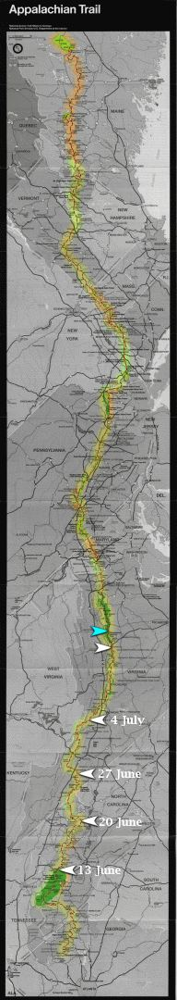

| Home | The Fox | Statistics | Maps | Churches |
StatusConfirmed - Midday 13 July 1998:Confirmed - the Fox is in Rockfish Gap Confirmed - 836.8 miles complete (38.64%) Confirmed - 1328.7 miles to go (61.36%)
Projected - Evening 14 July 1998: The Fox in Shenandoah[15 July 1998] On Monday the Fox contacted us from Rockfish Gap, Virginia, to report that he was on the verge of entering the hallowed Shenandoah Valley, the second major National Park that he has encountered along the Trail. In fact this is the first major national park he has encountered this summer, since the Great Smokey Mountain National Park was the last segment of last summer's shakedown hike. |

Legend
|